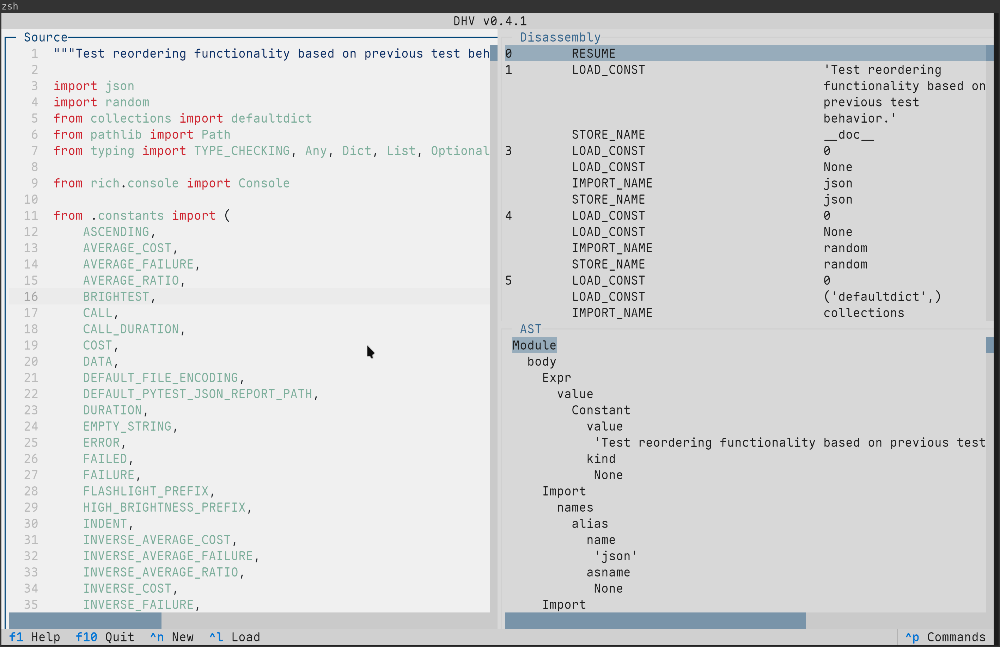

July 26, 2025
Scan the QR code to follow along.
chasten? Why did we build it?chasten for a Python projectchasten enables scalable and structure-aware feedback that effectively supports both instructors and students
chasten, it’s worth surveying the landscape of linting and checking
pyastgrep offers a novel way query a program’s AST!
Python Source Code
Abstract Syntax Tree
pyastgrepdef too_many_args(a, b, c, d, e, f):
def another_function(x, y):
def a_third_function(p, q, r, s, t, u, v):Find functions with more than 5 arguments
Find functions with more than 5 arguments
pyastgrep and chasten toolspyastgrepgrep-like console outputchastenpyastgrep’s APIdatasettechasten uses pyastgrep’s powerful search to build a configurable, project-oriented linter.
dhv to explore a Python AST
ast module - The official documentation for Python’s Abstract Syntax Tree module.pyastgrep - A tool for searching Python code with XPath expressions.chasten - A configurable program analysis and linting tool built on pyastgrep.datasette - A tool for exploring and publishing data.| Check ID | Check Name | File | Matches |
|---|---|---|---|
| PERF001 | nested-loops | analyze.py | 1 |
| PERF001 | nested-loops | display.py | 7 |
| PERF001 | nested-loops | main.py | 0 |
PERF001)
nested-loops)
analyze.py)
1 match)
PyOhio 2025